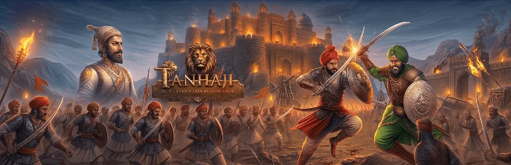

INDIAN GAMING in 2022-23

India is a place where people spend thousands of rupees every month to watch movies with friends and family. But what about gaming in India? Both movies and games are for entertainment, but games are more interactive and engaging. Once considered a hobby, gaming is now becoming a billion-dollar market where developers and gamers can earn more than traditional employees. Esports have grown globally, with players from all over the world participating in international tournaments.
The Gaming Industry in India
India's gaming industry encompasses three main types:
- PC Gaming
- Mobile Gaming
- Online Gaming
PC Gaming
When it comes to graphics and performance, PCs are the best. They are customizable and can be integrated with high-end graphics cards, powerful processors, and large system memory. PC Gaming in India is rapidly growing due to this customizability.
Mobile Gaming
Mobile gaming represents the future of the industry. Smartphone makers like Snapdragon, Apple, Samsung, Huawei, and MediaTek release powerful processors every year, enhancing mobile gaming performance. With millions of downloads on platforms like Google Play Store and Apple App Store, mobile gaming is booming in India. Startups are emerging, investments are lower, and accessibility is driving its growth.
Online Gaming
Online gaming involves playing video games over the internet, allowing people to find and play with friends globally. It can be enjoyed on PCs, consoles, or mobile devices, and has become a major form of entertainment and social interaction.
Types of Video Games
Action Games
Games centered around physical challenges that test hand-eye coordination and reflexes. Examples include Donkey Kong and modern shooters.
Subgenres: Platformer, Shooter, Fighting, Stealth, Survival
Adventure Games
Focus on storytelling, exploration, and puzzle solving. Players interact with the environment and characters to progress through the story.
Role-Playing Games (RPG)
Players assume the role of a character in a narrative-driven setting. Actions and character progression follow structured rules.
Types: Action RPG, MMORPG, Tactical RPG, Sandbox RPG
Simulation Games
Games that emulate real or fictional situations such as running a business, building cities, or driving vehicles.
Strategy Games
Games requiring players to use strategic planning and tactical thinking. Inspired by traditional board games, often turn-based or real-time.
Sports Games
Simulate real-world sports like football, cricket, basketball, or golf. These games allow players to compete against AI or real opponents.
Subgenres: Racing, Team Sports, Competitive, Sports-based Fighting
Puzzle Games
Require problem-solving skills, logic, or quick matching to progress. Popular on mobile due to simplicity and accessibility.
Subgenres: Logic Game, Trivia Game
Gaming Preferences in India
In India, mobile games are more popular than PC games mainly due to affordability and accessibility. Developers are now adapting PC and console titles for mobile audiences.
Popular Games in India
- PlayerUnknown's Battlegrounds (PUBG)
- Call of Duty: Mobile
- Clash of Clans
- Clash Royale
- 8 Ball Pool
- Ludo King
- Teen Patti
- Indian Rummy
- Carrom King
Less Known Games
- Assassin's Creed
- Far Cry
- Fallout
- Age of Empires
- The Witcher
- Tomb Raider
Indian RPG Adventure Game: Tanhaji – The Lion Maratha Warrior
Publisher: AbracaDabra Software Solutions Pvt. Ltd.
Following the lockdown, Indian gamers developed a strong interest in war-themed mobile games like PUBG and Call of Duty. After the government's ban on several foreign titles, AbracaDabra Software Solutions launched India's first fully developed 3D RPG, 'Tanhaji – The Lion Maratha Warrior', inspired by Maratha war history.
Story
Based on the life of Tanhaji Malusare, a brave warrior under Chhatrapati Shivaji Maharaj, who recaptured the Kondhana Fort from the Mughals in the 17th century.
Features
- Developed by an Indian startup under the Atmanirbhar Bharat initiative
- 12 game levels featuring historical characters like Siddhi Hilal and Udaybhan
- Regional music and immersive 3D visuals
- Promotes patriotism, courage, and dedication among youth
- Available for free on Google Play Store
Conclusion
Mobile gaming dominates the Indian market due to accessibility and affordability. However, with increasing local development and government support, India is emerging as a strong player in global gaming. Games like Tanhaji mark the beginning of India's journey toward self-reliance and innovation in gaming.